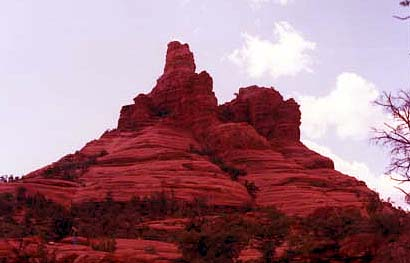
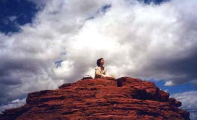
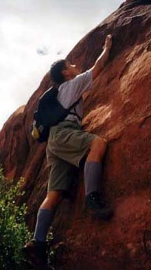
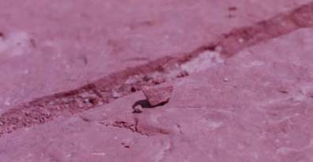

セドナ日記 〜 第３日目 98.5.6
ベルロックへ
 ベルロックは「Y」から、179号線を南下し、15分くらいで到着する。179号沿いの左側に、なるほど「ベル」の形をしてると思える岩山が見つかればそれが「ベルロック」である。
道路沿いに駐車スペースがある。ここにとめて、ベルロックを登ることにする。
近づいていくと、結構おおきい。しかも。特に道があるわけでもなく、どこを登ってもいいらしい。（とはいいつつ、登りやすそうなところは、おのずと決まってくるのだろうけど....）
ベルロックの北側を登ることにする（素直に登れば、北側を登ることになると思います....。）赤い岩が、複雑に浸食され、パイの生地のようである。
あるところは、平らな、大岩であるが、あるところは、ちょっと断崖のなっている。そんな、岩肌を、なんとか登っていく。実際、なんとかなってしまうようで、結構としをとった人達でも登っていた。逆に僕と千穂はトレッキングスタイルということで、水と食料のはいったデイパックをかついでいるのだが、他の人達は、ほとんど手ぶらだった。
さてこのベルロックは、頂上までは登れないようだ。（本格的な、ロッククライマーのみなさんは登れるでしょうが...）普通に登ると、だいたい30分くらいで、中腹にいきつく。ここからさきは、ちょっと苦しい。
その辺まで登ると、もうベルには見えない。あちこちに、天辺が平らになった、岩の柱みたいなのが伸び、ちょっと他の星のような気分になる。その、平らなところに座っていると、「インドの山奥で修行している行者」という絵になることができる。
眺望も最高だった。青い空。遠くの赤い岩山。足元の赤い岩の台。そして、駆け抜ける、乾いたそよ風。本当に絵になる。
世離れした気分がとても、味わえる場所だった。
ベルロックから降りるとき、千穂が悲鳴をあげた。すっ転んだのである。足元が、滑りやすくて、しかも崩れやすいところがいっぱいなのである。
しかも、彼女が転んだところには、「サボテン」があったのだった。その、針が、束になって彼女の肘につき刺さっていた。裁縫道具の針山そのものだった。本人はこの針自体はあまりいたくないようだった（本人からはよく見えない部位だったからだと思う。彼女から見えないことはラッキーだった。僕は見てるだけでも、すごくいたかった）その針を、１本づつ、ひっこ抜いた。針を抜くとき、皮膚がくっついてきて、ちょっと不気味だった。
おとぼけ千穂ちゃん、今日もやってくれました.....。